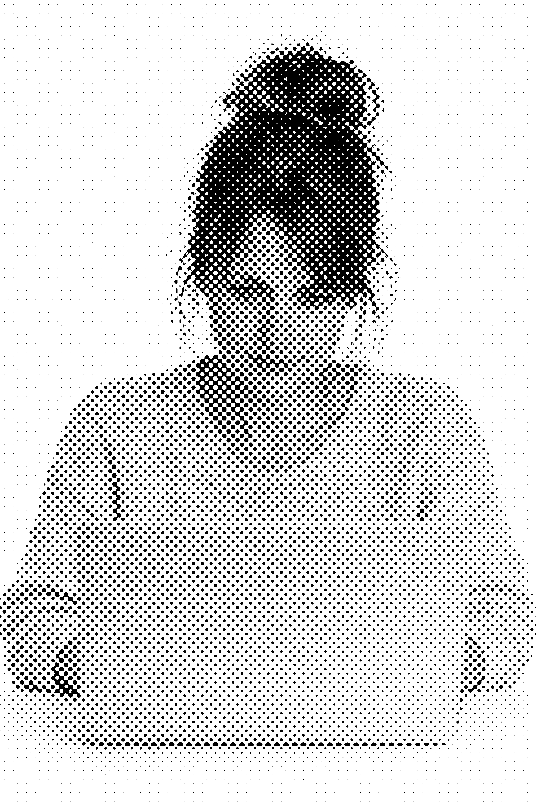
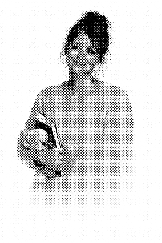
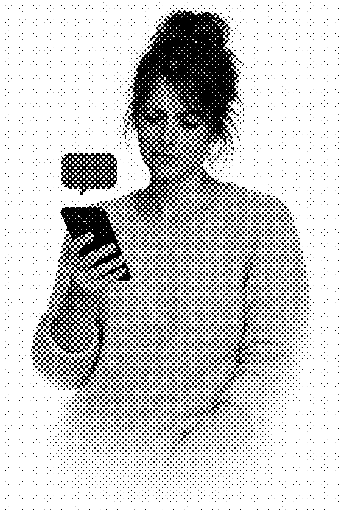
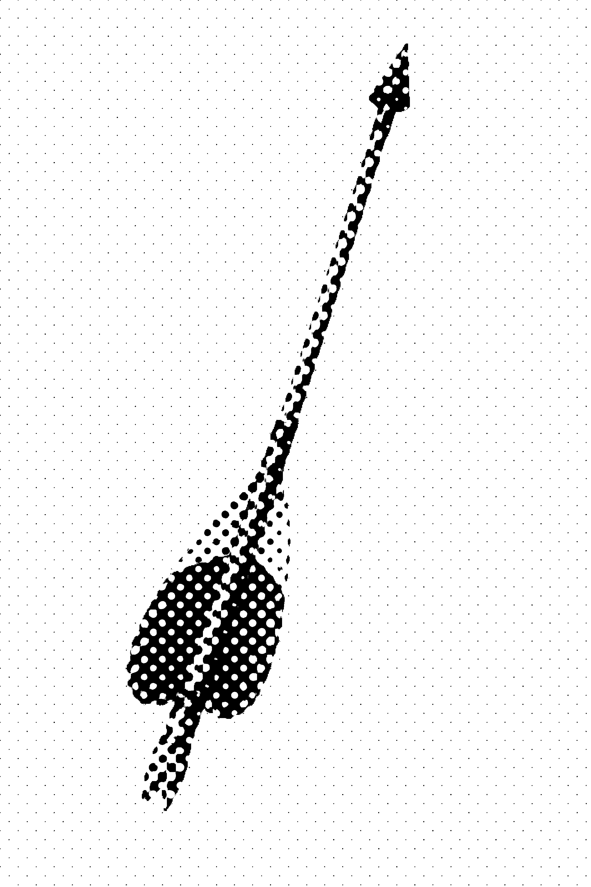
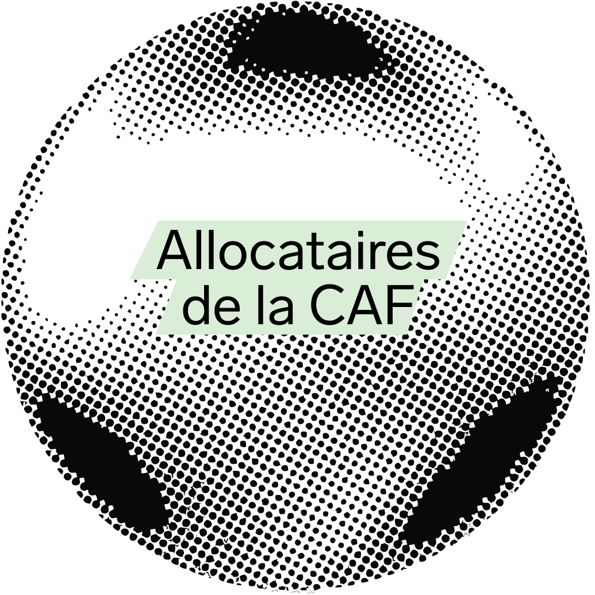
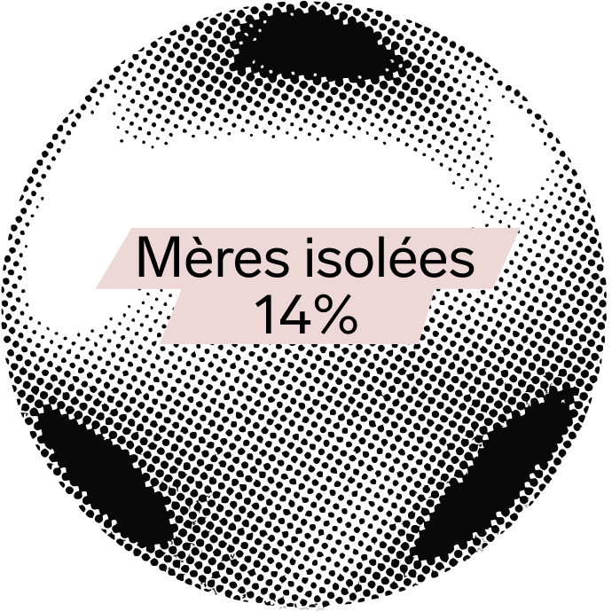
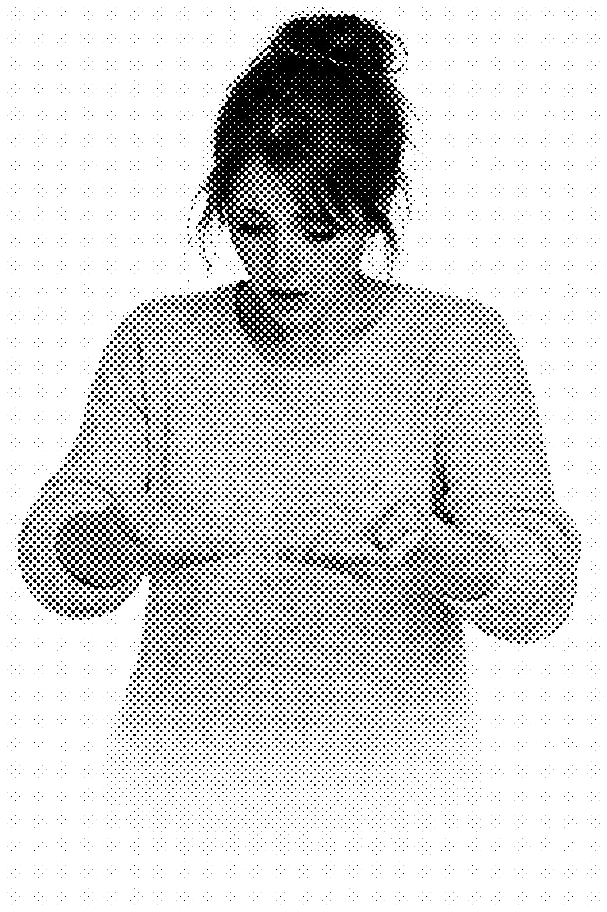
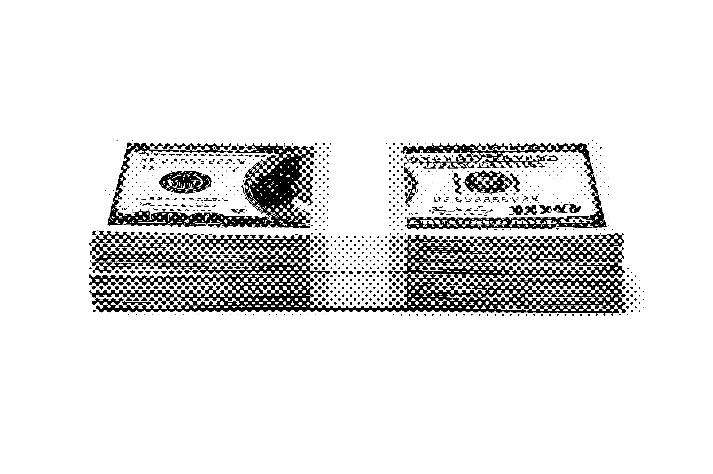
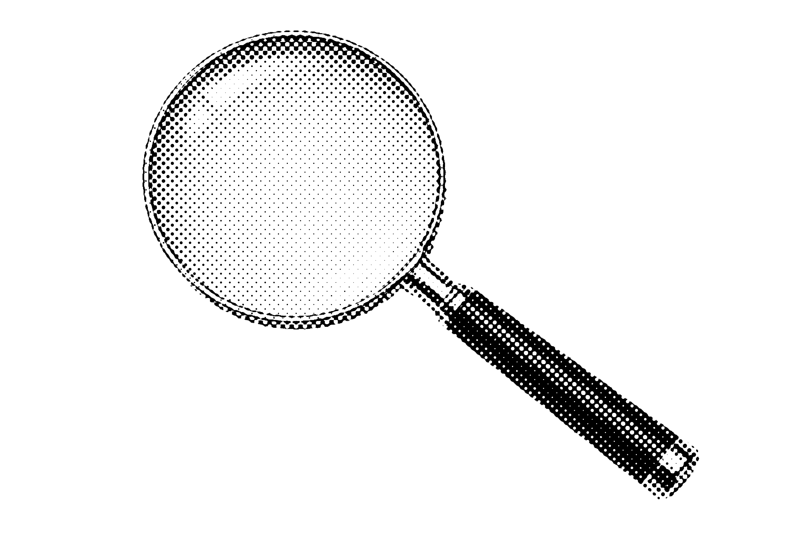
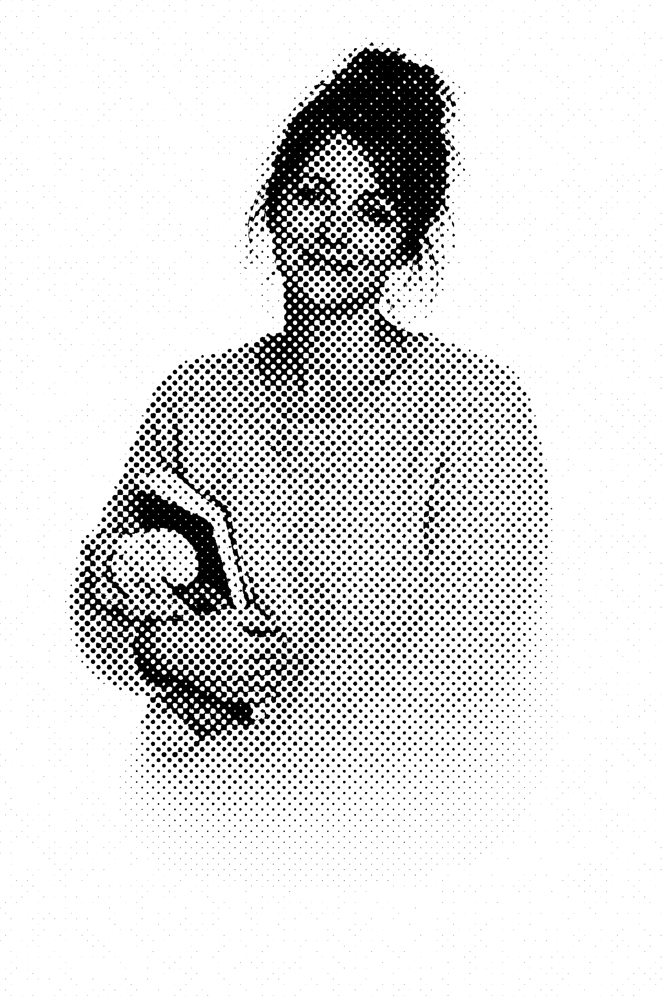

Depuis 2010, la Caisse d'allocation familiale (CAF) utilise un algorithme pour évaluer le risque de fraude des allocataires.
Depuis toutes les données qu'elle a à sa disposition, la CAF calcule ce qu'elle appelle un "score de risque de fraude" selon une note allant de 0 (le risque de fraude est faible) à 1 (le risque est maximum).
QUIZ
Selon vous, qui fraude à la CAF ?
Contrairement à ce qu'on pourrait croire, la fraude à la carte vitale et l’usurpation d’identité est quasiment inexistante en France, elle concerne moins d’une dizaine de cas par an et porte sur quelques millions d’euros seulement.
Le score de risque de fraude de la CAF a beaucoup de mal à détecter ces cas. Pour la CAF, c'est Marion et des profils similaires aux siens qui sont le plus à même de frauder.

Le score de risque de fraude de la CAF a beaucoup de mal à détecter ces cas. Pour la CAF, c'est Marion et des profils similaires aux siens qui sont le plus à même de frauder.
Pour mieux comprendre, écoutons le témoignage de Marion, inspiré de clui recueilli par l'émission "Les Pieds sur Terre" de France Culture


QUIZ
Selon vous, pourquoi Marion est-elle contrôlée ? (plusieurs réponses possibles)
Et bien cela peut-être l'une des trois raisons. Le contrôle est déclenché par un score calculé automatiquement.
Il ne détecte pas une fraude intentionnelle, comme le laisse supposer le terme de fraude, mais un risque d'indu, c'est-à-dire le fait que la CAF ait versé trop d'argent à un bénéficiaire. Ce que la CAF calcule, c'est le risque d'avoir perçu « 600 euros d'allocations en trop sur les 6 derniers mois ».
QUIZ
Que devrait faire Marion selon vous ?

Le problème est que l'algorithme considère un indu comme une fraude.
Dans cette situation, nous ne sommes pas du tout dans ce que l'imaginaire politique appelle de la fraude sociale. Nous sommes bien plus dans la difficulté des calculs de revenus complexes car aléatoires et entremêlés d'aides sociales, que confrontés à une fraude massive et volontaire des bénéficiaires.

Si l'on en croit le score de risque de fraude de la CAF, les mères isolées sont celles qui sont parmi les publics les plus à même de frauder la CAF : si elles ne représentent que 14% des allocataires en 2024, elles représentent 40% des plus hauts scores de risque de fraude selon l'algorithme de la CAF.


De nombreux critères influent sur le score de risque de fraude de la CAF.
Parmi les principaux :
- Le fait d'avoir des revenus faibles fait toujours augmenter le score.
- Le fait de bénéficier de certaines prestations sociales.
- Le fait de recevoir une pension alimentaire (qu'elle ait été touchée ou non).
- Le fait de toucher plus de 3 prestations sociales ou de toucher plus de 200 euros d'allocations par mois.
La conséquence, c'est que ce sont les personnes les plus précaires comme Marion, celles qui accumulent des critères de précarité, qui vont être surciblées et signalées comme à risque de frauder la CAF.


Effectivement, les mères isolées, qui se voient couper leurs aides pour des indus aux montants très faibles, qui subissent des contrôles répétés et envahissants, sont aujourd'hui désignées comme les principales fraudeuses de la CAF.
Qui fraude à la CAF ?
Selon le Haut Conseil du financement de la protection sociale, la part des titulaires de minima sociaux est faible. La fraude au RSA provenant des allocataires représente 1,5 milliard d'euros sur l'ensemble de la fraude évaluée.
En fait, l'essentiel des fraudes sociales est le fait des entreprises. On estime que 6,9 milliards de cotisations seraient éludées du fait du travail dissimulé des entreprises et des travailleurs indépendants.
Ce que montrent ces chiffres, c'est que ce ne sont pas les plus pauvres qui fraudent le plus, contrairement à ce que cherche à montrer le score de risque de fraude de la CAF
La lutte contre la fraude sociale des allocataires est moins pertinente que la lutte contre les cotisations dissimulées. Et que lutter contre la fraude sociale est bien moins efficace que lutter contre la fraude fiscale.



L'histoire de Marion n'a rien d'exceptionnelle. Elle illustre la réalité vécue par de nombreux allocataires ciblés par le score de risque de fraude de la CAF en raison de la précarité de leur situation.
25 associations, dont la Ligue des droits de l'homme, La Quadrature du Net ou Amnesty International, ont déposé un recours au Conseil d'État pour faire reconnaître l'illégalité de l'algorithme utilisé par la CAF.
Pour le Défenseur des droits, le score de risque de fraude de la CAF produit un surcontrôle des populations les plus précaires, selon une forme de discrimination fondée sur la vulnérabilité économique.
L'algorithme de score de risque de fraude de la CAF ne fait qu'aller chercher là où les prestations sont complexes et multiples. Il ne cherche qu'à détecter des indus plutôt que des fraudes, tout en automatisant une surveillance invasive de l'ensemble des allocataires.
Le Conseil de l'Europe, qui a compris que ces formes de ciblage dans les algorithmes sociaux tendent à discriminer certains publics, invite à les abandonner pour renforcer une sélection aléatoire des bénéficiaires à contrôler.
Assurément, le contrôle se trompe de cible.
Écoutons-les !
